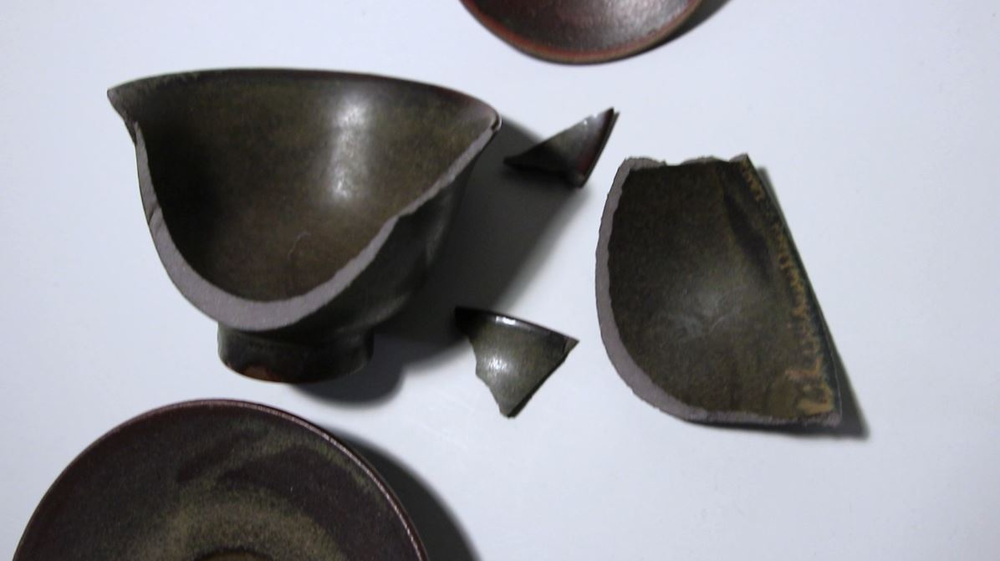

Pilotprojekt Video og foto produktion indsat i HTML/CSS/JS
Opgavens fokus
Denne opgave handlede om at lave en pilotvideo på et minut, hvor vi
skulle lave et interview med en person, der har en passion. Udover
videoen skulle vi lave et website, der præsenterede videoen, samt
fotografier i forskellige formater.
Min rolle
Jeg var sammen med en Markus til at løse opgaven. Min rolle var at
interviewe Jasper, mens Markus optog interviewet, b-rolls til
videoen og fotograferede.
Hvad jeg lærte
Jeg lærte at redigere videoer og klippe med Adobe Premiere, og lægge
videoen ind på websitet på to forskellige måder: med <video>
tag og med YouTube embed. Jeg lærte også at lave "usynlige klip",
hvor man bruger b-rolls til at skjule åbenlyse klip. Derudover har
jeg også lært at lave GitHub pages som optakt til den næste opgave.
I videoen valgte jeg at kalde titlen for Teahouse og bruge
baggrundsmusik med traditionelle kinesisk instrumenter for at sætte
stemningen som afslappende og inviterende. I videoen forklarer
Jasper også om forskellige typer te og te udstyr fra Kina og Japan,
hvilket også gjorde det oplagt at vælge præcis den baggrundsmusik.
Fordi tekanderne er lavet af keramik, så går det også let i stykker
når man taber det, så har jeg forsøgt at benytte hurtige klip i
sekvensen med den ødelagte tekande, som har den effekt at det bliver
mere dramatisk.

Den ødelagte tekande i pilotvideoen
Min proces
I fællesskab havde Markus og jeg oprettet en google docs, hvor vi
samlede interviewspørgsmål og shot-liste sammen. Hos Jasper
interviewede jeg Jasper, mens Markus optog interviewet i et take, og
bagefter b-rolls til videoen og fotograferede. Derefter lavede vi
hver vores eget pilotvideo og website til videoen.